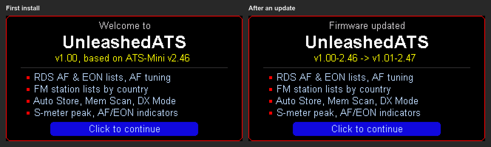
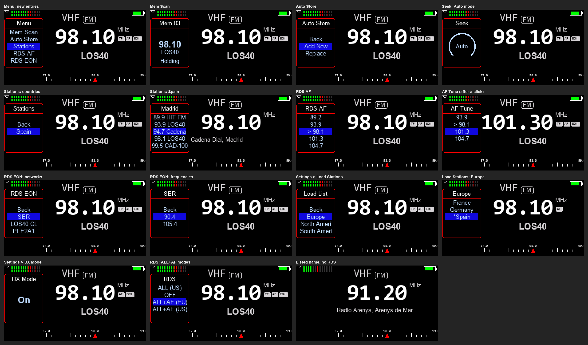
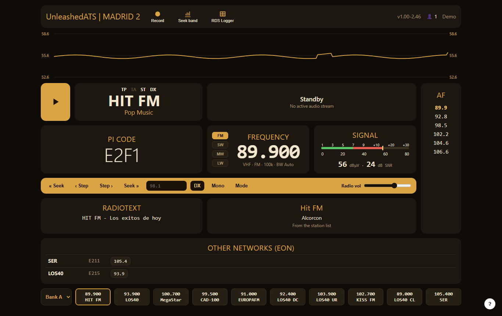
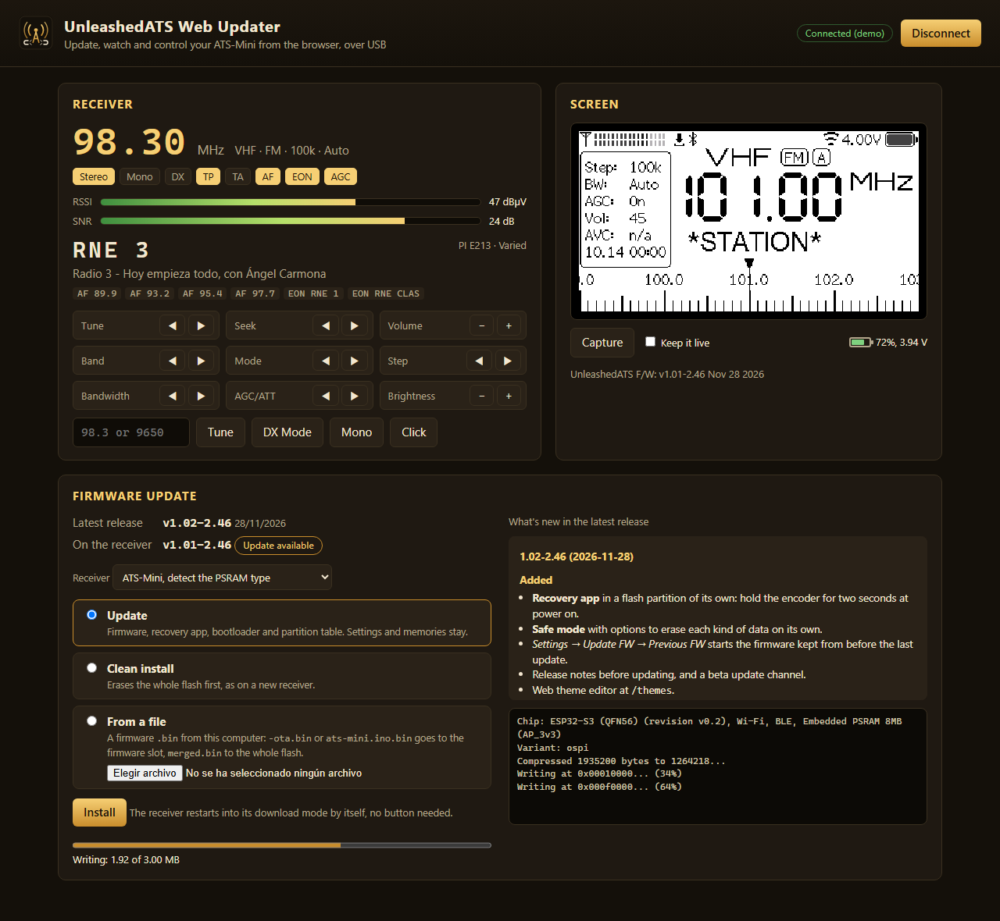

UnleashedATS is a custom firmware for the ATS-Mini SI4732 receiver. It keeps everything the official firmware does and adds what FM listeners and DXers miss: RDS you can use, station names by country, tools for distant stations, and a recovery system that keeps your radio safe.

UnleashedATS starts from the latest official ATS-Mini release, so everything you know is still there. Then it goes further, and it does so carefully.
Built on official ATS-Mini v2.46 and kept up to date with it. Bands, SSB, EiBi schedules, Bluetooth, the web interface: all still there.
AF and EON lists, DX Mode against soft mute, a DX Watch that alerts you when the band opens, and a name for every station, RDS or not.
A recovery app out of reach of updates, automatic rollback of updates that do not start, and the previous version one click away.
Install from the browser and keep your settings. Updates over Wi-Fi show what is new first. Going back to the official firmware is a normal flash.
MIT licensed, like ATS-Mini. Ideas the official firmware turned down are welcome here, and fixes go back upstream.
Make your own color themes in the browser, show the battery as a percentage, and pick stable releases or betas.
Every feature below comes on top of the official firmware.
The alternative frequencies and other networks a station announces, in lists you can browse and tune, plus AF follow when the signal fades and TP, AF and EON indicators.
Download the FM list of your country, browse it by province or state, and see the name of each station of your province on screen, even without RDS.
No soft mute on weak stations, an earlier blend to mono on FM and a more sensitive seek, on FM, MW, LW and SW.
Leave the receiver sweeping FM: it learns your local stations and stops on anything new, the sign of a tropo or sporadic E opening, and logs it.
Fill the memories with every station found and its RDS name, hop through them skipping the quiet ones, or rebuild them from a full sweep.
A /remote page with signal history, RDS, AF and EON lists and an RDS logger, and a PC companion that streams the audio to the internet.
Hold the encoder at power on: start either firmware slot, install one from your phone over Wi-Fi, or erase data part by part. It even starts by itself if the firmware breaks.
Read the release notes before installing, follow stable releases or betas, go back to the previous version, and let a failed update roll back by itself.
Install from Chrome or Edge over USB, with your variant detected and your settings kept, and watch the receiver live, screen included.
Every color of the screen, in your browser, with a live preview on the receiver. Keep up to eight themes of your own.
A filtered battery reading that shows as a voltage or as a percentage following the discharge curve of the cell.
Soft retunes without speaker thumps, long names that slide along, peak hold on the S-meter, and a welcome screen after each update.
The new menus on the receiver, the FM-DX style remote and the web updater.



UnleashedATS is the official firmware plus what is listed here, so the left column is not a list of faults: it is where UnleashedATS starts from.
| Official firmware (OFW) | UnleashedATS | |
|---|---|---|
| Base | ATS-Mini v2.46 | ATS-Mini v2.46, with everything in it |
| RDS name, text, PI, PTY, time | Shown | Shown |
| RDS AF and EON | Received and dropped | Listed, browsable and tunable, with AF follow and indicators |
| Stations without RDS | No name | Named from the downloaded country list |
| Weak stations | Soft muted by the receiver chip (up to 16 dB on FM) | DX Mode turns soft mute off and lowers the seek thresholds |
| Band openings | Nothing to watch them | DX Watch sweeps FM and alerts on new stations |
| Memories | Stored by hand | Also Auto Store, Mem Scan and Seek Auto |
| Remote control | Web status and settings; the F command tunes inside the band | FM-DX style /remote, PC companion with audio, any frequency from anywhere |
| Updates | Latest official release over Wi-Fi | Release notes first, stable or beta channel, previous version, automatic rollback |
| Encoder held at power on | Erases everything | Safe mode and recovery app, erasing only what you choose |
| A broken firmware | USB flash needed | Recovery app starts by itself and reinstalls over Wi-Fi |
| Themes | Built into the firmware | Your own, made in the browser; built-in ones can be hidden |
| Battery | Voltage | Filtered voltage or percentage |
| Install from the browser | Web flasher with the full image | Web updater that keeps settings and detects the variant |
| Contributions | Careful about what gets in | Fewer restrictions: ideas turned down upstream are welcome |
The web updater is the easiest way. Your settings and memories stay.
In Chrome or Edge on a computer, open the web updater. It always offers the latest release.
Plug it in with its USB cable and press Connect receiver. Your variant, OSPI or QSPI, is found by itself.
The receiver restarts into its download mode, takes the new firmware and the recovery app, and starts again with your settings.